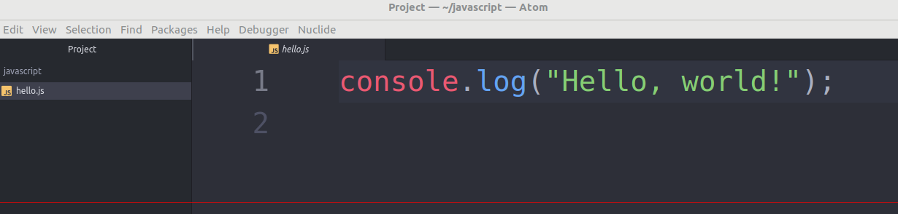

Java Script
Java Script
Les bases de JavaScript
JavaScript est un langage de programmation qui ajoute de l'interactivité à votre site web (par exemple : jeux, réponses quand on clique sur un bouton ou des données entrées dans des formulaires, composition dynamique, animations). Cet article vous aide à débuter dans ce langage passionnant et vous donne une idée de ses possibilités.
Qu'est le JavaScript, réellement ?
JavaScript (« JS » en abrégé) est un langage de programmation dynamique complet qui, appliqué à un document HTML, peut fournir une interactivité dynamique sur les sites Web. Il a été inventé par Brendan Eich, co-fondateur du projet Mozilla, de la Mozilla Foundation et de la Mozilla Corporation. JavaScript est d'une incroyable flexibilité. Vous pouvez commencer petit, avec des carrousels, des galeries d'images, des variations de mises en page et des réponses aux clics de boutons. Avec plus d'expérience, vous serez en mesure de créer des jeux, des graphiques 2D et 3D animés, des applications complètes fondées sur des bases de données et bien plus encore ! JavaScript est plutôt compact tout en étant très souple. Les développeurs ont écrit de nombreux outils sur le cœur du langage JavaScript, créant des fonctionnalités supplémentaires très simplement. Parmi ces outils, il y a :
- des Interfaces de Programmation d'Applications pour navigateurs (API) — API intégrées aux navigateurs web permettant de créer dynamiquement du HTML, de définir des styles de CSS, de collecter et manipuler un flux vidéo depuis la webcam de l'utilisateur ou de créer des graphiques 3D et des échantillonnages audio.
- des API tierces‑parties permettant aux développeurs d'incorporer dans leurs sites des fonctionnalités issues d'autres fournisseurs de contenu, comme Twitter ou Facebook.
- des modèles et bibliothèques tierces‑parties applicables à votre HTML permettant de mettre en œuvre rapidement des sites et des applications.
Comme cet article est une introduction simplifiée à JavaScript, nous n'allons pas compliquer les choses à ce stade en entrant dans les détails sur les différences entre le coeur du langage JavaScript et les différents outils cités plus haut. Vous pourrez entrer dans ces détails plus tard grâce à notre centre d'apprentissage JavaScript, et le reste du MDN. Ci-dessous nous allons vous présenter quelques aspects du coeur du langage, et vous pratiquerez aussi en manipulant les fonctionnalités des API navigateur. Amusez-vous !
Un exemple « hello world »
Le paragraphe précédent laisse entrevoir quelque chose de passionnant, et cela l'est vraiment — JavaScript est une technologie web parmi les plus dynamiques. Une fois que vous commencerez à être autonome en JavaScript, vous entrerez dans une nouvelle dimension de puissance et créativité. Cependant, être à l'aise avec JavaScript est plus dur que de l'être avec HTML ou CSS. Vous pourrez démarrer petit et continuer à travailler par petites étapes de façon soutenue. Pour commencer, nous allons vous montrer comment ajouter un JavaScript basique à votre page, en créant un exemple « Hello world ! »
- Tout d'abord, allez sur votre site de test et créez un nouveau dossier nommé « scripts » (sans guillemets). Ensuite, dans le nouveau dossier scripts que vous venez de créer, créez un nouveau fichier appelé main.js. Sauvegardez-le dans votre dossier scripts.
- Ensuite, dans votre fichier index.html, ajoutez l'élément suivant sur une nouvelle ligne avant la balise fermante (/body) : (script src="scripts/main.js")(/script)
- Cet élément a le même rôle que l'élément (link) pour le CSS — il applique le code JavaScript à la page, de sorte qu'il puisse avoir de l'effet sur le HTML (en même temps que le CSS et autres sur la page).
- Maintenant ajoutez le code suivant dans main.js :
let myHeading = document.querySelector('h1');
myHeading.textContent = 'Bonjour, monde !'; - Assurez-vous que les fichiers HTML et JavaScript soient enregistrés puis chargez index.html dans votre navigateur. Vous devriez obtenir quelque chose comme :

Remarque : < = ( et > = ) ⚠
Note : La raison pour laquelle nous avons placé l'élément (script) en bas du fichier HTML est que le HTML est chargé par le navigateur dans l'ordre dans lequel il apparaît dans le fichier. Si le JavaScript est chargé en premier et qu'il est supposé affecter le HTML en dessous, il pourrait ne pas fonctionner, car le JavaScript serait chargé avant le HTML sur lequel il est supposé travailler. Par conséquent, placer JavaScript près du bas de la page HTML est souvent la meilleure stratégie.
Les bases du JavaScript en accéléré
Nous allons explorer les fonctionnalités de base de JavaScript pour que vous puissiez mieux comprendre comment il fonctionne. Ces fonctionnalités sont communes à la plupart des langages de programmation, si vous comprenez ces éléments en JavaScript, vous êtes en bonne voie de pouvoir programmer à peu près n'importe quoi !
I) Variables
Les variables sont des conteneurs dans lesquels on peut stocker des valeurs. Pour commencer, il faut déclarer une variable avec le mot-clé let en le faisant suivre de son nom :
let myVariable;
Une fois une variable déclarée, vous pouvez lui donner une valeur :
myVariable = 'Bob';
Vous pouvez faire les deux opérations sur une même ligne si vous le souhaitez :
let myVariable = 'Bob';